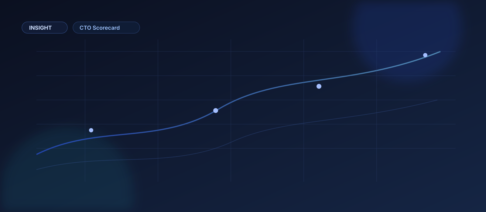

Metric 1: Cycle time
Median days from started to done.
Resource

Use this template weekly to detect delivery drift early and drive action. Keep it simple: 5 metrics, 5 owners, 5 decisions.
If releases slip every sprint, the delivery system is broken. This topic directly affects release predictability, technical leadership quality, and the ability of 10–100 engineer teams to ship reliably.
Operational implication: unresolved technical decisions and architecture drag compound quickly into missed commitments.
Need structured intervention? See fractional CTO consulting, AI integration consulting, and technical due diligence consulting. Also review delivery recovery.
Median days from started to done.
Planned vs delivered ratio per sprint/week.
Escaped defects + rework rate.
Engineering lead owns the scorecard. Product + leadership review weekly decisions from it.
Weekly, same day and time, with explicit actions assigned.
Use the downloadable scorecard in your next weekly leadership review, then tighten ownership in a 30-minute strategy call.
Want a tailored version? Book a discovery call.
Related services: fractional CTO consulting · AI integration consulting · technical due diligence consulting · delivery recovery consulting
Use it as an operating checklist tied to measurable outcomes and clear ownership.
If this topic reflects your current bottleneck, choose the next diagnostic action below.